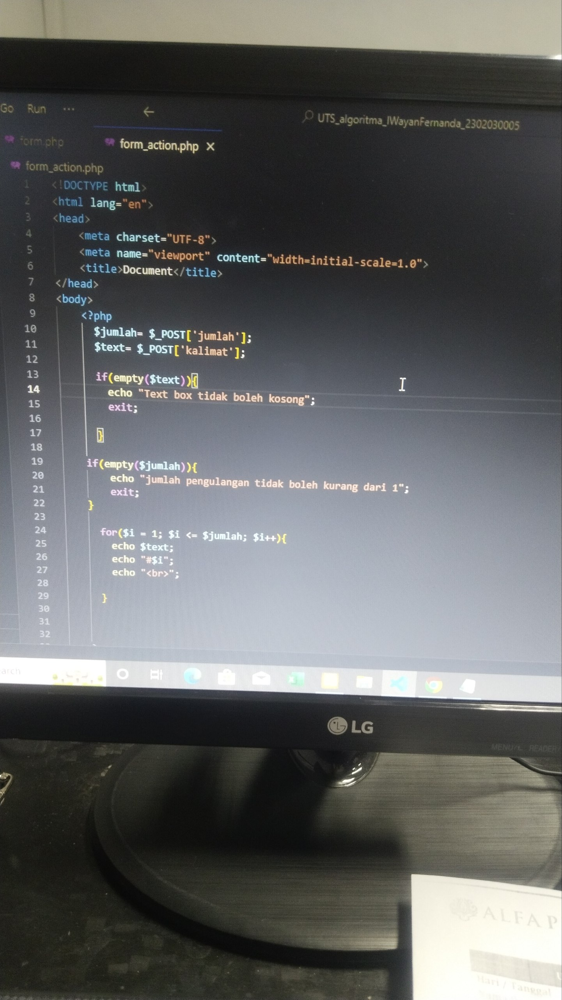
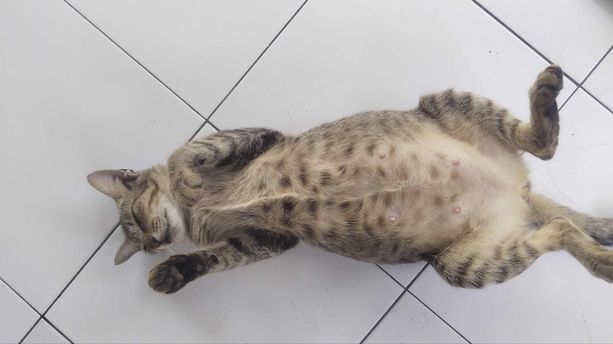

From Mechanical Auscultation
To Digital Architectonics
My scholarly provenance has sculpted my approach toward technological paradigms. Commencing from SMK Negeri 1 Denpasar and pursuing erudition at Alfa Prima Campus, I cultivated sagacity in both digital systems and mechanical engineering.
I am adept in PHP, Laravel, ReactJS, Tailwind CSS, and Python to architect modern systems and automata. I specialize in Telegram automatons utilizing Telethon and Pyrogram, fabricating user-bots endowed with auto-responses, missive stewardship, vocal chamber automation, and bespoke command schemas.
Transcending mere code, I possess hands-on mastery in electronics, cryogenic systems, refrigerative apparatus, and laundry automatons. For me, both programming and mechanical systems subsist on identical precepts: exactitude, syllogistic analysis, and a perspicacious comprehension of how each constituent interlaces within a holistic framework.
The Pillars of Mastery
IT & Web Sophistication
Tangible Mechanical Arts
Backend PHP Dynamism
// Hover or impinge upon a pillar above to instantiate the descriptive repository.
Algorithmic & Backend Locomotive
Logical expression through the calligraphy of PHP backend scripts. Processing functional algorithms, relational database manipulation, and handling dynamic logical flux in a structured manner.
Mechanical Disambiguation
Applied quantitative physics in rectifying macro-mechanical components, precision differential restoration, to direct vehicular synchronization techniques.
Visual Culture & Quintessence

Progeny of Eminence Alfa Prima 2024
Nanda's Diurnal Dimensions

Midterm Examination PHP Algorithmic Engine
